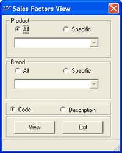

The sales factors listing gives the details of all the discounts and other sales factors defined. The report can be filtered for the two basic item classifications, Product and Brand.
How to reach: Catalogue > Listings > Sales Factors
The Sales Factors View window is displayed.

Product: This is one of the item classifications used for sales factor filtration.
All: Select if the sales factor details of all the products are to be considered.
Specific: Select if the sales factor details of specific product is to be considered. On selecting this, the drop down list below this option gets enabled. You can select the required product from the drop down list.
Brand: This is the second item classification used for sales factor filtration.
All: Select if the sales factor details of all the brands are to be considered.
Specific: Select if the sales factor details of specific brand is to be considered. On selecting this, the drop down list below this option gets enabled. You can select the required brand from the drop down list.
Code: Select to view the report on sales factor code.
Description: Select to view the report on sales factor description.